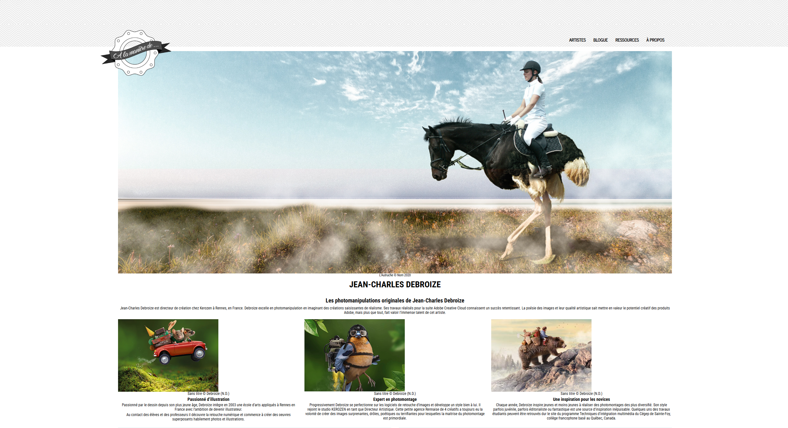
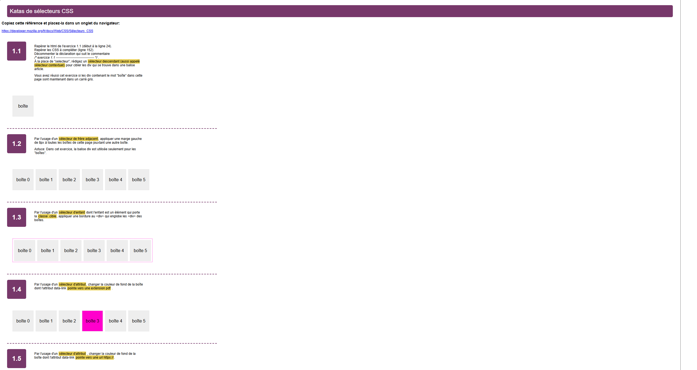
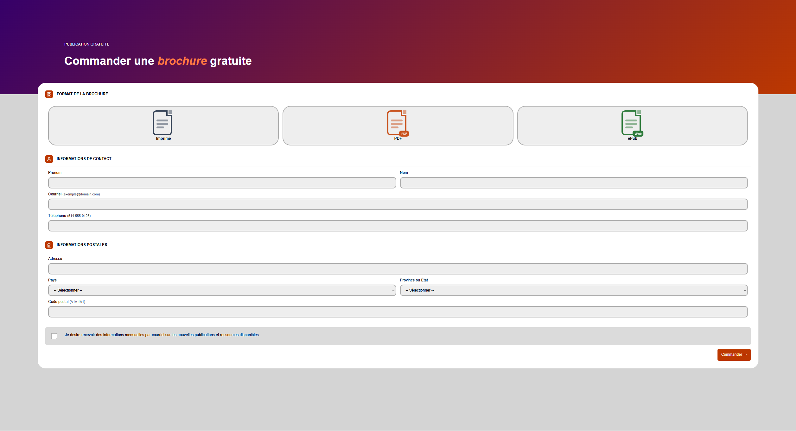
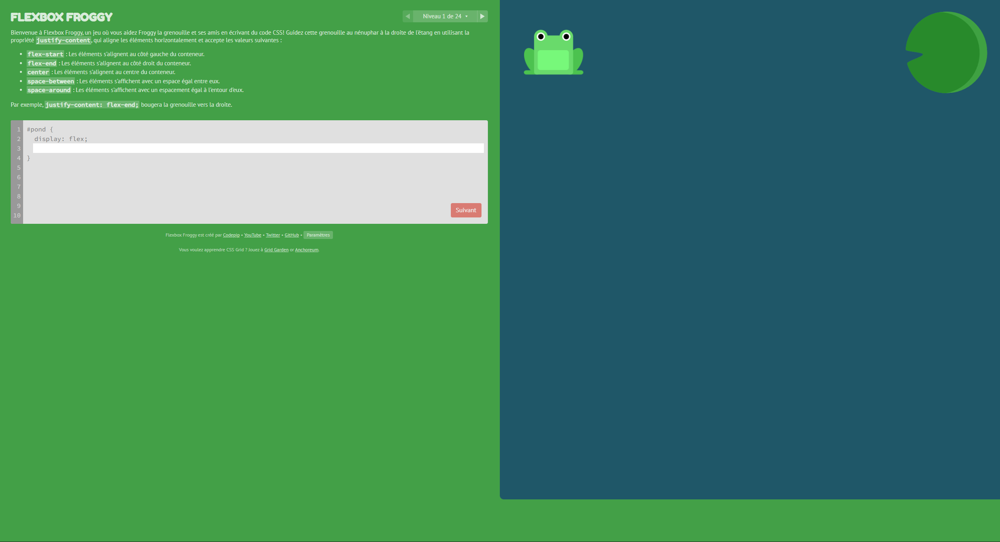
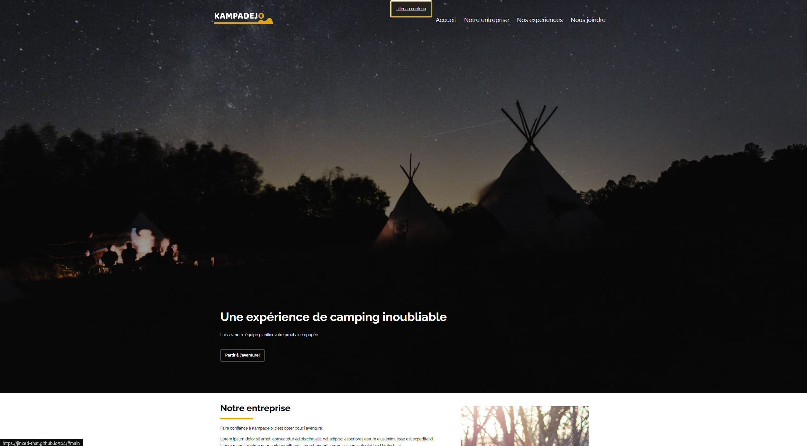

Portfolio
(*._.)b
/// // / | \ \\ \\\
//Info
/techniques d'intégration multimédia
/session d'hiver 2026
> ce site regroupe les projets que j'ai réalisé au cour de la session. ces projets m'ont permis d'apprendre différentes techniques en html ou en css.
### ## # ## ###
-
//showcase 01
/tp1
/TP

intégrer d'abord le html structurel et sémantique, puis les styles de présentation et enfin, s'il y a lieu, ajouter l'interactivité riche avec javascript et css.
-
//showcase 02
/projet personel
/important

faire un regroupement de tout ce que je trouves amusants en utilisant un mix de css et javascript.
-
//showcase 03
/tp2
/TP
construire une grille bento et de la rendre aussi proche que possible du design.
-
//showcase 04
/kata sélecteurs CSS
/kata

compléter les katas en utilisant des sélecteurs css
-
//showcase 05
/tp3
/TP

créer un formulaire basé sur un design donné.
-
//showcase 06
/flexbox froggy
/exe

faire les niveaux en utilisant les techniques de flexbox.
-
//showcase 07
/tp4
/TP

créer un skip-link pour l'accessibilité.
/// // / | \ \\ \\\
//footer
/notes supplémentaires regardant le projet
> les fonts qui sont utilisé n'autorise pas la redistribution publique des fichiers
> merci de ne pas rendre ceci publique
/credits